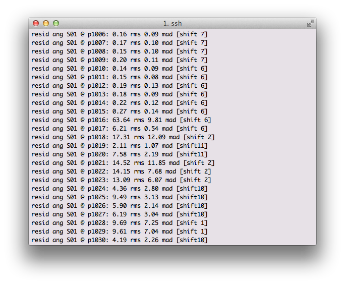

Hints
Pay attention to the wavelength fitting output

The output above shows that up to pixel 1015 the RMS was 0.27 Angstrom level, and then dramatically jumped to 60 angstrom. Look at the image and examine pixel 1016, figure out what happened. You may have to adjust your input files or remove a file from the set.
Look at rectified_wave_stack files
Look at rectified_wave_stack* files and make sure the night sky lines are vertical on the detector.